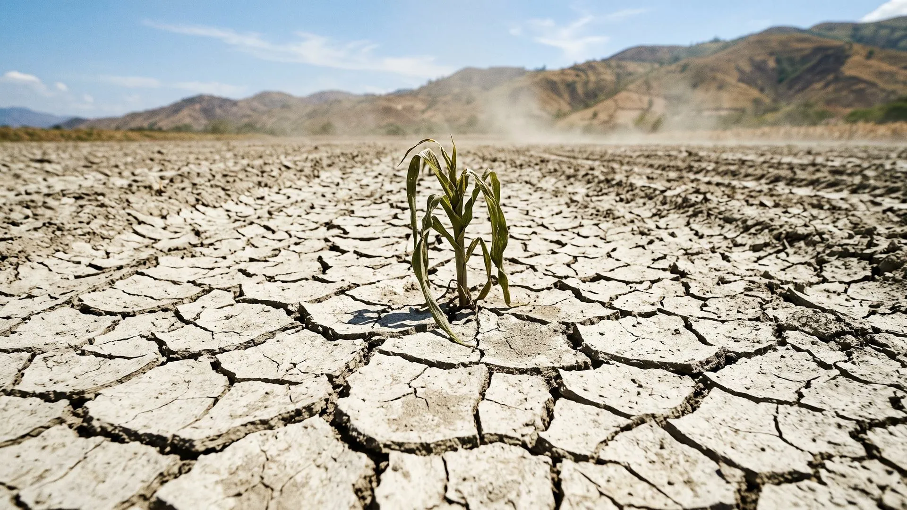

Las plantas beben,
no comen
Agua. Que entre, que se quede y que no se vaya llevándose el suelo.
Ya saben qué sembrar
y cuánto. Falta con qué se riega.
La calculadora de esta mañana da metros cuadrados. Ninguno de esos metros produce si el agua no se queda adentro del lote.

El nutriente que no está
disuelto no existe
para la planta.
Puede estar en el suelo, medido en el análisis, pagado en el bocashi. Si no hay agua que lo cargue, la raíz no lo ve.

Dónde se guarda
el agua de verdad
Antes de hablar de obras y de riego, entender el tanque que ya tienen.
El agua sube, se evapora…
y el mineral se queda

Al año caen 1.310 milímetros sobre esta finca
Casi ninguna finca tiene problema de lluvia. Tienen problema de retención.
Infiltra, escurre o se evapora
Entra al suelo y queda disponible para la raíz y para el nacimiento de abajo. Es la única que trabaja para ti.
Corre por la superficie, gana velocidad con la pendiente y se lleva suelo, materia orgánica y nutrientes.
Sale del suelo desnudo sin pasar por ninguna planta. Agua que llegó a la finca y no produjo nada.
Todo el diseño hídrico de una finca es correr el reparto hacia la primera.

El agua que corre
se lleva tu finca
El agua barrosa que sale del lote después del aguacero es la capa más fértil del suelo saliendo por la puerta. Es la misma capa que ayer alimentamos con bocashi y microorganismos.
Cada aguacero sobre suelo desnudo en pendiente se paga dos veces: pierdes el suelo y pierdes el agua.
Mitad sólido,
mitad espacio vacío
Un suelo compactado perdió los dos espacios: densidad aparente de 1,8 a 2,0 contra 0,8 a 1,0 en un suelo vivo. Compactar no es solo pisar: es labrar hondo y dejarlo desnudo.
Cada punto de carbono orgánico
es un tanque más
| Incremento de carbono orgánico | Agua adicional (L/m²) | Agua adicional (L/ha) | CO₂ capturado (t/ha) |
|---|---|---|---|
| +1 % | 14,4 | 144.000 | 132 |
| +2 % | 28,8 | 288.000 | 264 |
| +3 % | 43,2 | 432.000 | 396 |
| +4 % | 57,6 | 576.000 | 528 |
Dra. Christine Jones · amazingcarbon.com.au
Un reservorio de 288 metros cúbicos
que no hay que excavar
Y a diferencia de un reservorio, este guarda el agua exactamente donde está la raíz.

Con 2 % de materia orgánica
aguantas 3 o 4 semanas
sin regar
El mismo lote, el mismo clima, la misma lluvia. La diferencia entre regar cada tres días y regar cada tres semanas no está en la bomba: está en el carbono.

Infraestructura comprada
o infraestructura biológica
Una inversión grande de golpe: maquinaria, geomembrana, mantenimiento y evaporación en superficie. El volumen nunca crece y el agua queda lejos de la raíz. Sirve, y mucho, para riego de verano.
Se construye con lo que ya produce la finca, crece cada año que subes la materia orgánica, no se evapora y guarda el agua donde la raíz la necesita.
No son excluyentes. Pero si solo puedes hacer una este año, haz la segunda.

Leer el agua
en tu terreno
Antes de mover un metro cúbico de tierra hay que entender por dónde pasa el agua.
Ponte las botas
y camina el lote mientras llueve
- ¿Por dónde entra el agua al predio? ¿Viene de arriba, de un vecino, de una vía?
- ¿Por dónde corre? Marca los chorros: ahí está el camino que el agua ya eligió.
- ¿Dónde se empoza y dónde se escurre en segundos? Eso te dice compactación e infiltración.
- ¿Por dónde sale? ¿El agua que sale es clara o es barrosa?
Cinco minutos de aguacero dan más información que un plano. Grábalo con el celular: en verano no vas a acordarte.
El punto clave: donde el agua
empieza a tomar fuerza
Cortar el flujo antes de que erosione cuesta la décima parte de reparar la cárcava después.
Tres maneras de trazar
una curva de nivel
Dos palos, un travesaño y una plomada. Cuesta lo que cuesta la guadua y te lo haces esta semana.
Manguera transparente con agua entre dos personas. Más rápida en distancias largas.
Sirve para verificar y dejar registro, pero no reemplaza caminar el terreno con la estaca en la mano.
La curva de nivel no es una línea bonita: es la única línea donde el agua se detiene en vez de correr.
Cinco pasos y ya tienes
tu primera curva trazada
- Calibras el nivel A: marcas el punto de equilibrio invirtiendo las patas en el mismo sitio.
- Arrancas en el punto clave y clavas la primera estaca.
- Mueves la pata libre hasta que la plomada quede en la marca. Clavas estaca. Repites.
- Al terminar, miras la línea de estacas desde lejos y suavizas las culebras.
- Esa línea es el eje de tu terraza, de tu zanja o de tu línea de árboles.
Cuatro obras,
cuatro problemas distintos
Suelos clase I, II y III con 20 a 90 cm de profundidad. La que usamos acá.
Para lotes con exceso hídrico, donde el problema es sacar el agua de forma controlada.
Para pendientes fuertes cuando necesitas superficie plana para sembrar o transitar.
La alternativa en potreros y áreas grandes. Misma lógica, sin mover tanto suelo.
Así está hecha
la terraza de acá
Se construyen en cadena: cuando el sol seca la terraza recién hecha se siembra esa misma semana con cultivos de raíz corta. Arranque obligatorio: bocashi generoso, harina de roca y MM líquidos.
Zanjas de infiltración
y la línea de árboles
Sobre el borde superior de cada zanja va la línea de árboles: la zanja le entrega agua al árbol y el árbol le entrega raíz y sombra a la zanja. Una sola obra resuelve agua y agroforestería.
Impluvios: zanjas abiertas
arriba del nacimiento
- En invierno se llenan y recargan el acuífero que alimenta el ojo de agua.
- En verano el nacimiento produce durante más semanas.
- Todos los nacimientos de La Huerta tienen este manejo.
Un nacimiento no se cuida solo cercándolo: se cuida sembrando árboles y metiéndole agua a la montaña que está encima.
Sembrar en el sentido
de la pendiente
Cada surco trazado hacia abajo es un canal: el agua acelera, arrastra suelo y abre cárcavas. En café, en maíz y en hortalizas.
El agua se frena, se reparte a lo ancho y se infiltra. El mismo aguacero deja de ser amenaza y pasa a ser recarga.
Mismo lote, misma lluvia, misma semilla. Cambia el trazo y cambia el resultado.

Retener: que el agua
no se escape
Ya la hicimos entrar. Ahora toca evitar que se vaya por arriba.

Todo lote descubierto
está evaporando
El suelo desnudo se calienta, pierde agua por evaporación directa, se sella con el golpe de la gota y deja de infiltrar. Y sin raíz viva no hay exudados: la microbiota que montamos se queda sin comer.
Pérdida de agua, de carbono y de biología, todo al tiempo.

Con qué se tapa
- Lo que cortas con la escarda se queda en el sitio: la maleza cortada al cuello es cobertura, no basura.
- La cobertura baja la temperatura del suelo, frena la evaporación y alimenta la macrofauna.
- No se pisa la cama de siembra: se entra solo por los caminos, para no cerrar los poros que tanto costó abrir.
El microclima también
es manejo de agua
Bajan la temperatura, frenan el viento y reducen la evapotranspiración de todo lo que está debajo.
Interceptan la gota antes de que golpee el suelo: menos sellado de superficie, más infiltración.
Sombra permanente sobre el suelo. Un lote con sombra parcial pide bastante menos riego que el mismo lote a pleno sol.
Regar: cuándo, cuánto
y a qué hora
El riego es el último recurso, no el primero. Y aun así se puede hacer bien o se puede hacer caro.
Dos maneras de saber
si el suelo tiene sed
Abres 15 cm, tomas un puñado y aprietas. Si se agrega y mancha la mano, hay humedad. Si se desmorona como polvo seco, el cultivo ya está sufriendo.
Te da el número. 25 % ya está cerca del punto de marchitez permanente; 30 a 38 % es el rango óptimo.
Empieza con la mano y calibra el tacto con la sonda. En dos semanas tu mano ya es un sensor.
La mejora más barata
de toda esta clase
Casi el doble de agua útil por el solo hecho de mover el horario.
Riega cuando el suelo lo pida,
no cuando lo diga el calendario
- Riegos cortos y frecuentes mojan los primeros centímetros y crían raíces superficiales.
- Riegos profundos y espaciados mandan la raíz hacia abajo, donde el agua dura.
- Un cultivo que nunca pasa sed nunca aprende a buscar agua.
El calendario sirve para registrar lo que hiciste, no para decidir lo que vas a hacer.
El ciclo que cierra el hotel
Aguas grises y negras de 23 habitaciones y dos restaurantes.
Tratamiento primario y secundario antes de llegar al suelo.
Tratamiento biológico con plantas. Análisis de laboratorio una vez al año.
Nitrógeno, fósforo, potasio y materia orgánica regando el pasto de corte, el botón de oro y el bore.
Lo que en la mayoría de las fincas es un problema sanitario, acá es un insumo.
Dónde sí y dónde nunca
va el agua residual tratada
Pasto de corte, King Grass y similares. Bancos de proteína: botón de oro y bore. Potreros en PRV. Arbolado maderable y ornamental.
Hortalizas para consumo humano directo. Aspersión cerca de zonas de paso de personas. Frutales bajos donde el agua pueda tocar el fruto.
Y análisis de laboratorio al menos una vez al año, aunque todo se vea bien.
Lo que aprendimos equivocándonos
Riego nocturno, por la misma razón de siempre. Y si el sistema pasa cuatro semanas sin MM, el olor regresa.
Analiza tu agua
una vez al año
- Salinidad y conductividad: un agua salina te sala el suelo despacio, sin que lo notes hasta que es caro.
- Sodio, calcio y magnesio: definen si tu agua dispersa o estructura el suelo.
- Alcalinidad y pH: condicionan la disponibilidad de nutrientes y la eficacia de los biopreparados.
- Si el agua es de acueducto, déjala reposar 24 horas destapada antes de usarla con microorganismos. El cloro los mata.
El agua es la que mueve
los otros seis
Los estratos y la sombra bajan la evapotranspiración del lote.
Sin humedad no hay actividad biológica: el inóculo seco no trabaja.
El nutriente solo se mueve disuelto, y más materia orgánica es más agua retenida.
El agua transporta y permite que la energía dé otra vuelta dentro de la finca.
Cinco decisiones de agua
para cualquier finca
- Subir la materia orgánica: es el reservorio más barato y el único que crece solo.
- Trazar en curva de nivel desde el punto clave, siempre, en cultivo y en potrero.
- Nunca dejar suelo desnudo.
- Regar de noche, por observación y en profundidad.
- Cerrar el ciclo: lo que sale como agua usada vuelve a entrar como riego donde sí se puede.

El mapa de agua
de tu lote
- Dibujas tu lote a mano. No necesitas plano: una hoja y un lápiz.
- Marcas por dónde entra el agua, por dónde corre y por dónde sale.
- Señalas el punto clave y el nacimiento, si lo tienes.
- Trazas la primera curva de nivel y decides qué va encima: terraza o zanja.
El agua ya se queda.
Falta hacerla dar vueltas.
Principio 6 · Cada vuelta que da la energía es plata que no sale. Fotosíntesis, biomasa, ciclos cerrados e integración pecuaria. El agua que retuvimos hoy es la que mueve toda esa energía.